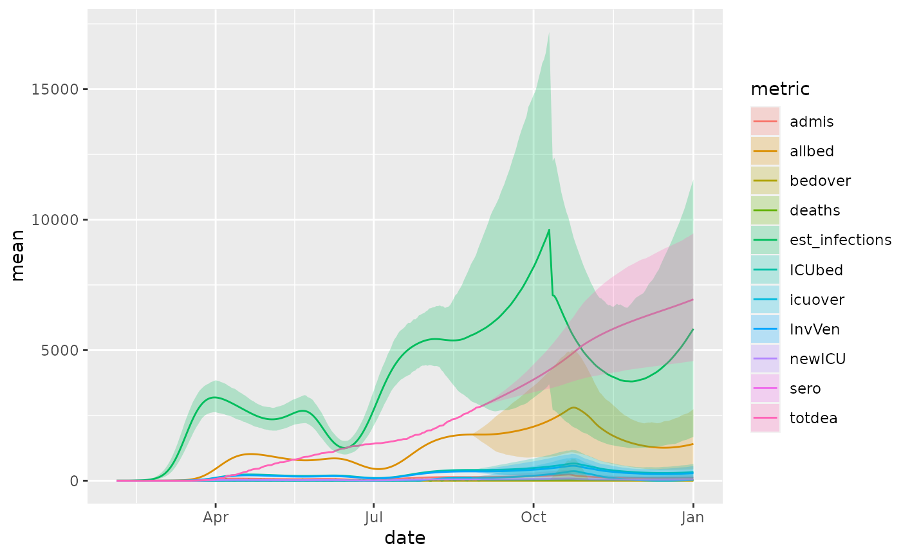
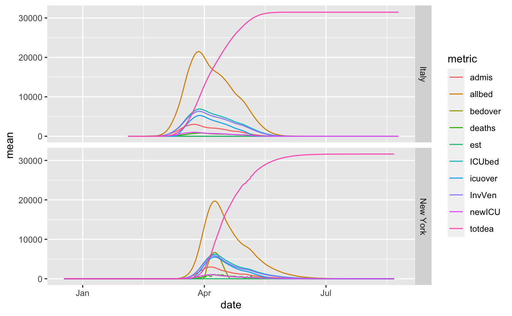

healthdata.org covid19 morbidity and hospitalization estimates
Source:R/healthdata_projections_data.R
healthdata_projections_data.RdThese are time-series data that forecaset the COVID-19 impact on hospital bed-days, ICU-days, ventilator-days, and deaths by US state and selected additional countries or regions. The data are those used here https://covid19.healthdata.org/projections.
healthdata_projections_data()
Source
Value
data.frame with columns for:
location_name
date
metric: such as all beds needed
mean, upper, lower: mean, upper confidence interval, lower confidence interval
References
See also
Other data-import:
apple_mobility_data(),
beoutbreakprepared_data(),
covidtracker_data(),
descartes_mobility_data(),
ecdc_data(),
eu_data_cache_data(),
google_mobility_data(),
jhu_data(),
jhu_us_data(),
kff_icu_beds(),
nytimes_county_data(),
us_county_geo_details(),
us_healthcare_capacity(),
us_state_distancing_policy(),
usa_facts_data()
Examples
#> [1] "location_name" "date" "metric" "mean" #> [5] "lower" "upper"#> # A tibble: 6 x 6 #> location_name date metric mean lower upper #> <chr> <date> <chr> <dbl> <dbl> <dbl> #> 1 Montana 2020-04-17 ICUbed 7.41 5.75 12.4 #> 2 King and Snohomish Counties (excluding … 2020-05-19 ICUbed 4.67 0 24.2 #> 3 Schleswig-Holstein 2020-07-21 newICU 0 0 0 #> 4 Indiana 2020-02-05 newICU 0 0 0 #> 5 Provincia autonoma di Bolzano 2020-06-17 totdea 275. 255. 317. #> 6 Rhineland-Palatinate 2020-06-22 icuov… 0 0 0#> Rows: 303,795 #> Columns: 6 #> $ location_name <chr> "Abruzzo", "Abruzzo", "Abruzzo", "Abruzzo", "Abruzzo", … #> $ date <date> 2020-01-03, 2020-01-03, 2020-01-03, 2020-01-03, 2020-0… #> $ metric <chr> "allbed", "ICUbed", "InvVen", "deaths", "admis", "newIC… #> $ mean <dbl> 0, 0, 0, 0, 0, 0, 0, 0, 0, 0, 0, 0, 0, 0, 0, 0, 0, 0, 0… #> $ lower <dbl> 0, 0, 0, 0, 0, 0, 0, 0, 0, 0, 0, 0, 0, 0, 0, 0, 0, 0, 0… #> $ upper <dbl> 0, 0, 0, 0, 0, 0, 0, 0, 0, 0, 0, 0, 0, 0, 0, 0, 0, 0, 0…summary(res)#> location_name date metric mean #> Length:303795 Min. :2020-01-03 Length:303795 Min. : 0.0 #> Class :character 1st Qu.:2020-02-25 Class :character 1st Qu.: 0.0 #> Mode :character Median :2020-04-19 Mode :character Median : 0.0 #> Mean :2020-04-19 Mean : 199.9 #> 3rd Qu.:2020-06-12 3rd Qu.: 2.2 #> Max. :2020-08-04 Max. :67641.1 #> lower upper #> Min. : 0.0 Min. : 0.00 #> 1st Qu.: 0.0 1st Qu.: 0.00 #> Median : 0.0 Median : 0.00 #> Mean : 154.6 Mean : 341.70 #> 3rd Qu.: 0.0 3rd Qu.: 5.75 #> Max. :59053.1 Max. :139102.60#plot the predictions regs_of_interest = 'Georgia' library(ggplot2) pl = res %>% dplyr::filter(location_name %in% regs_of_interest) %>% ggplot(aes(x=date)) + geom_line(aes(y=mean, color=metric)) # plot the "mean" prediction plregs_of_interest = c('New York', 'Italy') pl = res %>% dplyr::filter(location_name %in% regs_of_interest) %>% ggplot(aes(x=date)) + geom_line(aes(y=mean, color=metric)) + facet_grid(rows = vars(location_name)) pl